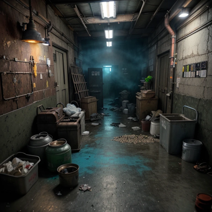

Como começou?
Um grupo de curiosos andava pelo distrito industrial até que encontram a fábrica do macho, uma antiga lenda urbana, ao explorá-la eles entram em uma sala com um grande corredor bagunçado.
Eles dão uma olhada e não encontram nada demais, mas ao sair da sala, eles se dão conta de que não estão mas onde deveriam estar.
Outra versão
Um homem dormiu. Quando acordou percebeu que ele estava em um lugar desconhecido apenas com um caderno e uma caneta, com isso ele documentou algumas coisas.

Ao menos, é o que dizem...